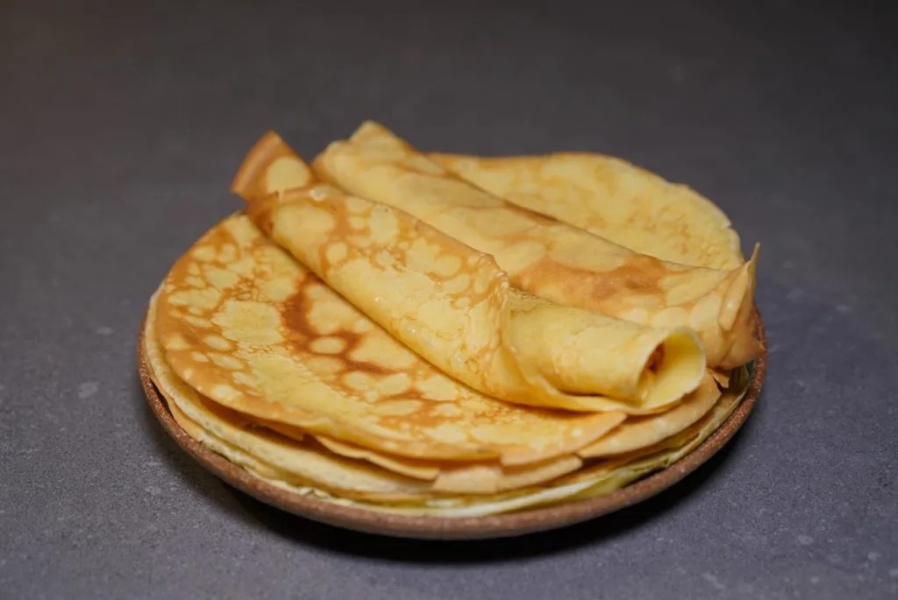
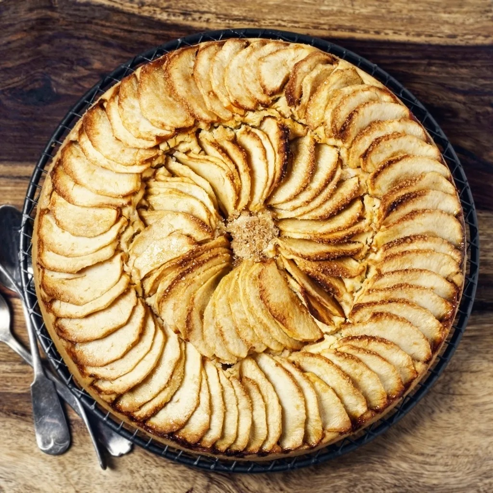

Homemade Crêpes
A simple recipe for delicious light and fluffy crêpes.
Ingredients: flour, eggs, milk, butter, sugar.
Preparation: Mix the ingredients, cook in a pan, enjoy warm.
Likes: 0 | Dislikes: 0
Ratatouille
A stewed Provençal dish, rich in colorful and tasty vegetables.
Ingredients: eggplants, zucchinis, bell peppers, tomatoes, onions.
Preparation: Sauté the vegetables, then simmer gently.
Likes: 0 | Dislikes: 0

Apple Tart
A classic French dessert with a crispy crust and soft apples.
Ingredients: shortcrust pastry, apples, sugar, butter.
Preparation: Roll out the dough, arrange the apples, sprinkle with sugar, bake.
Likes: 0 | Dislikes: 0